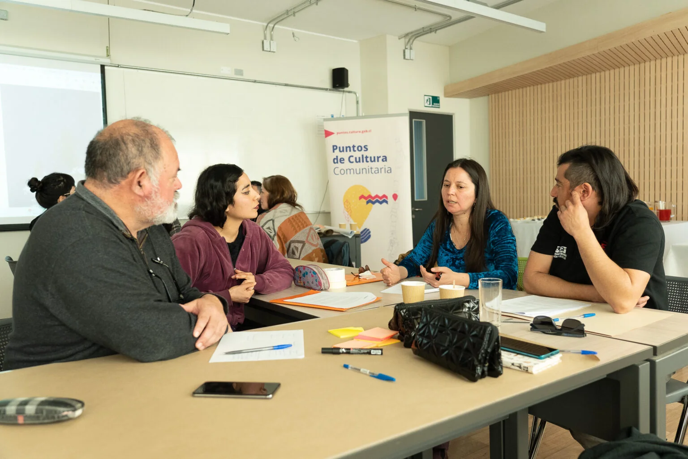

Un Territorio Digital para la Red de Puntos de Cultura Comunitaria de O’Higgins

La actividad se realizó en colaboración con el Centro de Estudios La Grieta, quienes están a cargo de llevar adelante el diseño de gobernanza de la Red, junto al equipo de LaDamaJuana, a cargo del proyecto Territorio Digital que beneficiará a la Red de Puntos de Cultura Comunitaria de la Región de O’Higgins. Territorio Digital es una iniciativa que se financia gracias a la convocatoria de IberCultura Viva para el apoyo a redes y trabajo colaborativo 2024.
Ibercultura Viva es un programa de cooperación técnica y financiera entre gobiernos iberoamericanos creado para fortalecer las políticas culturales de base comunitaria, tanto gubernamentales de los países miembros como las de organizaciones culturales comunitarias y de pueblos originarios en sus territorios. Impulsado por la SEGIB, se crea en base a la experiencia del programa Cultura Viva de Brasil. Es así como en el encuentro se pudo presentar a la Red PCC, los alcances y resultados que esperamos obtener.
La jornada estuvo marcada por el entusiasmo y espíritu de colaboración de los representantes de las organizaciones, quienes tuvieron la oportunidad de conocerse y transmitir sus anhelos y expectativas relacionadas al fortalecimiento de la red. “Yo creo que son súper nutritivos estos espacios, donde estamos generando una red ya mucho más consistente y conociéndonos, descubriendo un poco qué es lo que tenemos en común y pienso que con el acompañamiento que nos dieron hoy día se van encauzando bien todas las ideas que estamos proponiendo”, señaló Alexandra Grandon de Fundación Queltehue. Por su parte, Nicolás Cartagena de la Escuela Carnavalera Batuquebatu de la comuna de Peumo, compartió su impresión, “me sirvió para conocer como trabajan las otras organizaciones que son parte también de la red, estamos formando algo súper sólido y estas instancias son super enriquecedoras.”
Territorio Digital es un concepto emergente en el ámbito cultural que refiere a la creación, ocupación y gestión de espacios digitales donde se desarrollan diversas formas de interacción social, producción social y gestión de conocimiento. El proyecto busca la construcción de una plataforma web donde cada organización que conforma la Red de PCC de O’Higgins, tenga su vitrina de difusión, con el fin de comunicar a las comunidades la diversidad de oferta programática que la red tiene a disposición. Además, será una instancia de reconocimiento y puesta en valor de sus trayectorias, a través de ladocumentación de sus historias y con la creación de material fotográfico y audiovisual.
Click aquí para conocer y estar al tanto de los hitos de avance del proyecto.
Esta nota fue publicada originalmente en ladamajuana.cl.